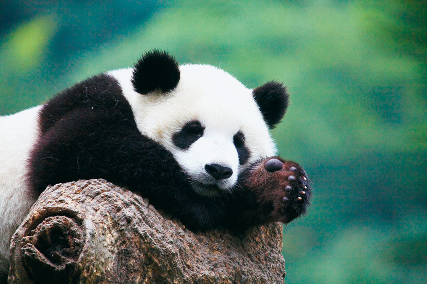

Репутация у них, пишет Би-би-си, следующая: милы и безобидны, уморительно чихают, едят почему-то в основном бамбук, а в мультфильмах они здорово владеют кунг-фу. В реальности - да панды милы, с этим не поспоришь, но обниматься к ним лучше не лезть: у панд очень мощные челюсти и крепкие зубы. Поедание бамбука - очень успешная эволюционная стратегия. Вымирания они никак не заслуживают.
Пожалуй, ни один вид из существующих в наши дни животных не окружен таким количеством мифов, как большие панды. На содержащихся в неволе панд возложено тяжкое бремя: они играют роль самых разных символов – в том числе политических и экономических. На фоне этого не очень часто вспоминают о том, как эти животные ведут себя в естественной для них среде обитания.
Между дикими пандами и их живущими в неволе собратьями есть большие и важные различия. Поэтому, прежде чем рассказывать всю правду об этих своеобразных животных, нужно уточнить, о каких именно пандах идет речь. Звери в неволе вполне отвечают стереотипам: это пушистые, чихающие, уморительные, равнодушные к продолжению рода создания. Но дикие панды - это совершенно другое дело. Забудьте про смешные видеоролики, сделайте глубокий вдох и очистите сознание от любых знаний в области пандоведения, которыми вы, по вашему мнению, обладали. Потому что большинство этих знаний, скорее всего, не соответствует действительности.
С тем, что панды привлекают внимание, не поспоришь. В 1966 году зоолог Десмонд Моррис составил список из 20 причин, по которым люди так интересуются этими животными. Примерно половина из этих причин относилась к внешности: плоская морда, большие глаза, округлые очертания тела, контрастная расцветка и так далее. Однако милая внешность может быть обманчивой: к дикой панде лучше близко не подходить. Впрочем, даже в неволе, где животные привычны к постоянному вниманию людей, они могут представлять реальную опасность. В 2006 году нетрезвый 28-летний посетитель Пекинского зоопарка по имени Чжан забрался в вольер к пандам и попытался погладить обитателя. Искатель приключений пытался показать свою удаль, но в итоге получил серьезные травмы голени.
Большие панды способны наносить такие увечья благодаря своим анатомическим особенностям. Они имеют мощный череп с так называемым сагиттальным гребнем - костным образованием, идущим от лба к затылку. К этому гребню крепятся мощные челюстные мышцы, и по силе укуса панда занимает одно из лидирующих мест среди всех хищников. Такие сильные челюсти нужны животному, чтобы разгрызать жесткие бамбуковые стебли. Кроме того, у панды есть:
*ложный большой палец - увеличенная лучевая сезамовидная кость, при помощи которой зверь способен лучше удерживать стебли бамбука;
*сложная микрофлора кишечника, помогающая в пищеварении;
*желание и готовность проводить большую часть своего времени за сбором, обработкой и поеданием бамбука.
Эта пандочка желает тебе хорошего дня!.
За счет этих особенностей большая панда добилась замечательных эволюционных успехов. Этот хищник нашел способ перейти на питание бамбуком - распространенным в природе пищевым продуктом, урожай которого мало зависит от сезона. К тому же, в отличие от пищи большинства других хищников, бамбук не склонен спасаться бегством. Кто дочитал до конца, тот молодец.